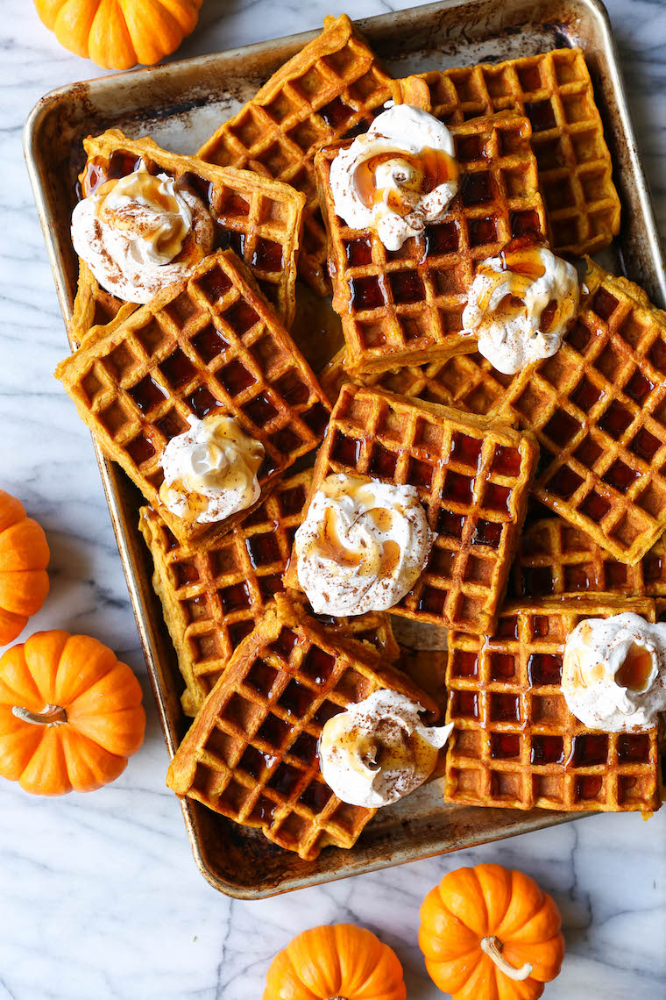

Pumpkin Spice Waffles

A wonderful fall treat for all the pumpkin lovers in your life.
Ingredients:
- 1 3/4 cups all-purpose flour
- 2 teaspoons brown sugar
- 1 1/2 teaspoons baking powder
- 1 teaspoon baking soda
- 1 teaspoon pumpkin pie spice
- 1 teaspoon kosher salt
- 1 1/4 cups buttermilk
- 1 cup canned pumpkin puree
- 2 large eggs
- 1/4 cup unsalted butter, melted
Directions:
- Preheat oven to 200 degrees F and a waffle iron to medium-high heat. Lightly oil the top and bottom of the waffle iron or coat with nonstick spray.
- In a large bowl, combine flour, sugar, baking powder, baking soda, pumpkin pie spice and salt.
- In a large glass measuring cup or another bowl, whisk together buttermilk, pumpkin puree, eggs and butter. Pour mixture over dry ingredients and stir using a rubber spatula just until moist but slightly lumpy.
- Pour a scant 1/2 cup of the pumpkin mixture into the waffle iron, close gently and cook until golden brown and crisp, about 4-5 minutes; keep warm in oven.
- Serve immediately.